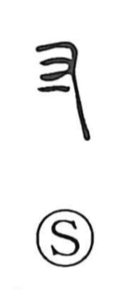

寸

Uncategorized
Kun: | On: sun
inch ・ a little ・ unit of length
Explanation
This graph combines the right hand (又) with a short stroke indicating a single finger, expressing the breadth of one finger of the hand. In traditional body-based measures, a shaku (尺)—shown as a hand with the thumb and middle finger spread and the wrist marked—was the span across the hand; 寸 is one tenth of a shaku and thus serves as a unit of length, about an inch. Because a finger’s breadth is small, the character also came to mean “a little.”